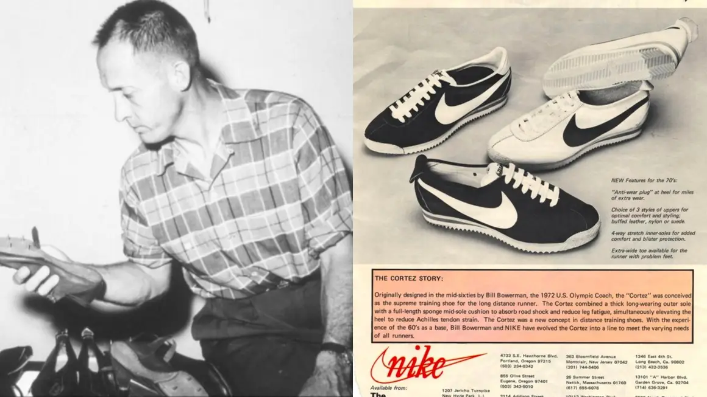

HISTORY OF NIKE

It was founded in 1964 as Blue Ribbon Sports by Bill Bowerman, a track-and-field coach at the University of Oregon, and his former student Phil Knight. They opened their first retail outlet in 1966 and launched the Nike brand shoe in 1972. The company was renamed Nike, Inc., in 1978 and went public two years later.